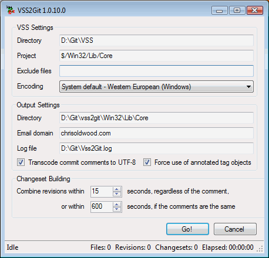

Back in the late 1990’s I found myself starting to acquire a considerable volume of code from various personal projects that I had been working on in my spare time. Having been brought up to use a Version Control System (VCS) to manage my source code assets at work it seemed eminently sensible to do the same thing at home. Unsure about exactly which product to choose I naturally fell into using the one that came bundled with the compiler – Visual SourceSafe (VSS). Given that it was also the VCS product I had been using at my client back then I got training & experience as a nice by-product of work.
Fast forward 15 years and I still find myself using the same VSS repo I set up all those years ago! Despite a considerable number of excellent free and open source alternatives springing up in the intervening years that were far superior, I found myself clinging on. This wasn’t because of any killer feature, but mostly because I didn’t want to lose easy access to my ever growing archive of version history when switching to another product. Mainstream support ended for SourceSafe last year so I don’t even have that to prop me up any longer either.
This article then is my journey on how I finally shook off the shackles of SourceSafe whilst maintaining as much history as possible. It also goes into some of the questions I asked myself about source code structure of shared components in the face of online repositories like GitHub. Eventually I’ll get to the mechanics of how to migrate source code and some of the problems I encountered along the way.
My lengthy procrastination has had the pleasant side-effect of letting the VCS ecosystem settle down quite a lot. I really didn’t fancy going through all this again every time The Next Big Thing came along. The two clear choices for me were Subversion and Git, with the former being what I had been working with for the last few years, while the latter was just too big to ignore. I was also aware of the Git/Subversion integration so felt that there was a clear migration path in sight either way after finally putting VSS to rest.
If you’re wondering whether I looked at any paid-for products, then, no. Remember that this was my own personal codebase and so I’m happy to live with whatever support I can get off the Internet these days. I might have shelled out for a migration tool if the freely available options didn’t come up to scratch – they didn’t with VSS2SVN, but fortunately they did with VSS2Git.
Despite the Distributed Version Control System (DVCS) being a relatively modern invention compared to their Centralised (CVCS) counterparts, I’ve been (ab)using SourceSafe over the last decade in such a way that I’ve got a clunky similar model anyway.
Essentially I have a trusty old Network Attached Storage (NAS) box that contains the “master” copy of my VSS repo and then on my desktop and laptop(s) I hold a copy. This gives me the full access to the history, which I want when developing, along with a repo to store my “work in progress”. The downside of course is that I have to do a “formal” check-in to the master some time later and re-sync the repo (think ROBOCOPY) to bring in changes made via other routes. Like I said, it’s clunky.
Aside from the day-to-day development chores I also publish the source code along with the binaries on my web site to allow anyone foolish enough to tinker themselves. This has the nice added bonus of being an off-site backup. OK, so the .zip files don’t have the full history but it was better than nothing until the arrival of cheap, cloud based backup services.
This neatly brings me to the final piece of my migration puzzle – the introduction of an online source code repository. Given that I’d already discovered Git was the best choice for migrating my history, another brief investigation also led me to GitHub as a suitable online provider. Once again the fact that all my source code is published (even the dross) means the public-only nature of the free repos happily suits my needs.
That said I still feel uneasy about relying solely on a service like GitHub as the canonical source for my code and so I still have bare Git repos on my NAS box to act as the central point for collaboration across my own devices. Bare repos only store revisions so you cannot use them for merging or development, which is essentially what GitHub provides anyway.
This leads to a workflow where the laptop(s) and desktop are the clones where I do my main development. I then pull & push to the repos on my NAS to synchronise (should the need arise) with a final push from the NAS to GitHub to publish (backup) my work in progress. When I want to formally release a new version I can build, package and publish to my web site as before. I’ll also include the source code as a snapshot like always just to make it easier for someone else to pick it up.
As you’ve probably guessed there isn’t exactly a lot of “collaboration” going on, which is a major selling point for tools like Git and GitHub, but that’s not the point really; for me it’s as much about creating and dealing with a legacy codebase as a learning tool.
The biggest decision I had to make when deciding to move from VSS to another product was whether to keep using a single monolithic repo. My codebase contains around 50,000 SLOC of C, C++, SQL and PowerShell code distributed across 50 or so separate “components”; these consist of scripts, libraries and applications. This way of working (one repo) has always suited me, but with a desire to publish via a more collaborative service too, I felt it might be a good time to see if it would be better to split it up into smaller components; perhaps with a separate repo for each one. Another eventual driver was the difference in the way VSS, Git and Subversion handle labels – in short, they don’t; at least not in the same way that VSS does (on a per-file basis).
For projects with no dependencies the decision was easy as everything would be self-contained. For my C++ codebase however, where I have a number of different static libraries (Lib-1, Lib-2, etc. below) that are reused across many different applications (App-1, App-2, etc. below) the choice was harder. If I created one repo per application (option 1) I’d have to share copies of the libraries and then find a way to synchronise changes across them all. Doing this without just manually copy-and-pasting the changes is probably doable in Git but would likely require the kind of Git fu that is well beyond my current n00b skillz.
├───App-1
(repo)
│ ├───Lib-1
│ │ └───Lib-1 Tests
│ ├───Lib-2
│ │ └───Lib-2 Tests
│ └───App-1 Tests
└───App-2
(repo)
├───Lib-1
│ └───Lib-1
Tests
├───Lib-2
│ └───Lib-2
Tests
└───App-2 Tests
The opposite choice (option 2) was to have one repo per shared component (i.e. static library) and then another separate repo for each of the application-level components (i.e. executable, COM server, etc.). My existing folder structure naturally lent itself to this approach because each component was already self-contained:-
├───App-1
(repo)
│ └───App-1 Tests
├───App-2
(repo)
│ └───App-2 Tests
└───Lib
├───Lib-1 (repo)
│
└───Lib-1 Tests
└───Lib-2 (repo)
└───Lib-2 Tests
Then there was the half-way house (option 3) which would see separate repos for each application-level component, but just a single repo for all the shared static libraries.
├───App-1
(repo)
│ └───App-1 Tests
├───App-2
(repo)
│ └───App-2 Tests
└───Lib
(repo)
├───Lib-1
│
└───Lib-1 Tests
└───Lib-2
└───Lib-2 Tests
The one exception to all this was my build scripts because they lived in the root of the tree. They aren’t essential for building any single application as they’re more for command-line batch-building of the entire estate. I decided they could live with the libraries or go in another separate repo.
So many choices! In the end I opted to split out the applications and all the shared libraries into separate components and repos (i.e. option 2 above). My rationale was that a 3rd party should only need to clone the bare minimum to get the application to build – the waters should not be muddied by any of my really old nasty legacy library code that is of no importance to the application in question. I also elected to create a separate repo for my build scripts as they are optional too.
From a Git migration perspective I was somewhat concerned about how much work this was going to be. The worst case seemed to be migrating the whole thing once and then trimming it down manually to just the tree of interest, along with moving all the files up into the root of the repo. Some VCS repos are immutable by default and Git is no exception, but it did appear that some advanced Git magic [1] might make it possible to physically remove the unwanted sub-trees afterwards to conceal the initial mess.
Once again lady luck shined on me and
whilst I was investigating how other developers have solved the problem of
shared components in project-focused repos I stumbled upon a recent addition to
the Git toolset – git subtree split [2]. As we
shall see later this command can rebase (in the file-system sense) a sub-folder
right back up to the root of a repo.
The investigation also lead me to the concept of “submodules” [3] in Git, which are akin to “svn:externals” in Subversion, and it raised an important difference in the way that I, as owner and fundamentally the main developer of this entire codebase work differently to how another collaborator would. Essentially I am interested in developing the libraries with one eye on the changes that affect all dependents, whereas a collaborator is likely to be only concerned in the effects on the application that directly interests them. Naturally I decided to optimise for the common case (me as the sole developer) and keep the libraries parallel to the applications rather than move them “under” and then treat them as sub-modules. I can of course change my mind later as the hard work has already been done.
Finally, after all that philosophical waffle we come to the mechanics of creating one or more Git repositories from a SourceSafe one.
The first step is to read up on how Git
handles line-endings as this will likely affect your code. GitHub have a
splendid document that covers the practical aspects of this issue [4]. If you
think it’s all rather convoluted you can read up on how the different settings
evolved over time to cater for the different scenarios as they cropped up [5]. Suffice
to say that after opening a shell with the Git toolkit on your
C:\>
git config --global core.autocrlf true
Next up create a folder under which you’re going to create your migrated Git repository(s):-
C:\>
mkdir D:\Git\vss2git
The tool I chose to use for the migration
was VSS2Git [6]. This is a GUI-based application that relies on another Git
installation being installed, and being accessible via the
C:\>
"c:\Program Files\Vss2Git\Vss2Git.exe"
Before starting I sync’ed my local VSS repo to match the one on my NAS box to ensure I was working with the latest stuff; this also gave me a separate copy which I could mess around with and see what happens when I migrate sub-folders instead of the root, e.g. my build scripts.

As an example when I migrated my Core C++ library, which lives under $/Win32/Lib/Core, I used the following (non-default) settings:-
VSS
Directory: D:\VSS\Git
VSS Project:
$/Win32/Lib/Core
Git
Directory: D:\Git\vss2git\Win32\Lib\Core
Email
domain: chrisoldwood.com
These should be fairly obvious. What might
be less obvious are the two settings at the bottom (
Personally I’m pretty fastidious about providing check-in comments and so I dialled down the setting that works off empty comments to a mere 15 seconds as I know any commit without a check-in comment is rare and almost certainly unimportant. In contrast I upped the other setting that matches comments to 600 seconds as I always tried to reuse the same check-in comment where possible; the only reason for a delay would have been getting temporarily distracted.
With everything configured it’s time to hit “Go!” and wait for VSS2Git to weave its magic. Depending on the repo size this could take some time as it has to build and replay the commits into the Git repo. This means that you can’t point it to a bare Git repo because as explained earlier they have no working copy, but it will create a non-bare one for you at the path you specify.
If you’re migrating your entire VSS repo to a single Git repo then you’re almost there, but if like me you want to split it up you have more work to do.
The VSS2Git tool converts files and folders exactly as they are in the source repo. This means that the file $/Win32/Lib/Core/ReadMe.txt will appear in the Git repo under the same relative path (\Win32\Lib\Core\ReadMe.txt) even if you only intend to migrate the $/Win32/Lib/Core project. What I wanted was for all the paths to be shifted up so that \Win32\Lib\Core is now the root of the Git repo, e.g. ReadMe.txt moves from \Win32\Lib\Core\ReadMe.txt to just \ReadMe.txt, and for all the superfluous parent folders to disappear.
As mentioned earlier Git has a separate command
for this – subtree split – although it appears to be a
very recent addition at the time of writing. When I was originally
investigating, some Git builds supported it (msysgit)
and others didn’t (GitHub for Windows). Both of these now do, but it’s another
thing to catch out the unwary.
The way I used this command was to create a new branch in the VSS2Git generated repo based on master (a.k.a trunk), but with the paths munged to strip off the leading $/Folder/Folder parents:-
D:\Repo>
git subtree split --prefix=Win32/Lib/Core -b split
When describing my current workflow earlier I suggested my point of collaboration was still going to be a central repo on my NAS box. Whilst the point of a DVCS like Git is that I can use it in a peer-2-peer like manner, it also gave me an opportunity to create a bare repo and see what the differences were in practice. The folder structure on my NAS box reflected the way I was going to clone them for use during development.
For the Core library I created the bare repo like so:-
C:\>
git init //ziggy/Git/Win32/Lib/Core --bare
…and then pushed the cleaned-up branch from the VSS2Git generated repo to it:-
C:\>
git push //ziggy/Git/Win32/Lib/Core split:master
–tags
This has the added effect of moving the changes from the “split” branch back onto the “master” branch where they belong going forward.
Once again this extra step is somewhat contrived because I’m using GitHub more as a backup than a point of collaboration. After creating a new repo on my GitHub account, called “Core”, I can then link it to the bare repo on my NAS box and push the migrated source like this:-
C:\>
pushd \\Ziggy\Git\Win32\Lib\Core
Z:\>
git remote add github https://github.com/chrisoldwood/Core.git
Z:\>
git push -u github master --tags
When cloning a Git repo the source is normally referred to by the name “origin”. I chose to name it “github” instead to signify its status as just another clone rather than being the canonical source.
If you read the article(s) listed at the beginning about line endings you’ll have noticed there is now a per-repo setting for handling the line endings issue in a way that allows developers to configure their machine how they like it whilst letting the repo decide what its own policy should be.
Of course there is a chicken-and-egg
problem here because you need a repo to add the .gitattributes file to, but trying to do this earlier means you can run into other
problems because you’ve tainted the repo you want to push your migrated
revisions to. This is not a major problem when you’re used to Git, but it’s a
head-scratcher when you’re new to it. Consequently I left this step to be the
first new commit following the migration.
At a minimum you want to add a .gitattributes file in the root of the repo that has this at the top:-
# Set
default behaviour, in case users don't have core.autocrlf
set.
* text=auto
If you read up on what goes into this file
you’ll probably come across the .gitignore
file too and so I ended up committing them as a pair. If you’re using the
GitHub for Windows UI you’ll find this is a key part of the Git repo configuration.
Here is a tiny example of the kinds of files you normally avoid checking into
any VCS repository and therefore get included in your .gitignore file:-
# Build
artefacts
*.dll
*.exe
*.lib
*.obj
If your projects are based around Visual Studio then you’ll probably have enabled the VSS integration. The GUI friendly way to untie your solutions from VSS is to use the “File | Source Control | Change Source Control…” option and unbind the projects. You’ll still be left with some detritus in your repo and in a couple of cases I had manually prise the bindings from Visual Studio to stop it complaining every time I opened the solution. There is a blog post from Brian Carroll [8] that describes how to manually strip the bindings, but it basically boils down to the following steps:-
*.vspscc and *.vssscc filesGlobalSection(SourceCodeControl)
= preSolution” fragment
from the .sln fileScc* = SAK” lines
from the .vcproj file preambleIf, like me, you’re going to split out many
libraries and projects this all becomes very tedious if done manually and so a
little dash of automation goes a long way. By sticking to one simple convention
– the local Git repo folder names and GitHub repo name match – you can apply
the Swiss-Army knife of DOS programming (the FOR loop) and run the
same commands across every repo.
In my case I had a whole bunch of repos generated by VSS2Git at the same level in the file-system, except for the Lib folder, which itself contained another bunch of repos:-
├───App-1
├───App-2
├───Lib
└───App-N
The following one-liner (ahem) will navigate into a repo folder, do the path normalisation, create the bare master repo, push the migrated changes, attach it to GitHub and push the changes to that too. And do it for every folder that appears to be a Git repo (i.e. has a hidden .git subfolder at its root):-
for
/d %d in (*) do @(
if exist
"%d\.git" (
pushd
%d
git subtree split
--prefix=Win32/%d -b split
git init //ziggy/Git/Win32/%d --bare
git push //ziggy/Git/Win32/%d split:master
--tags
pushd \\ziggy\Git\Win32\%d
git remote add github
https://github.com/chrisoldwood/%d.git
git push -u github master --tags
popd
popd
)
)
The most laborious part of the process now just becomes driving VSS2Git. There is a request open to suggest automating it via the command line [9] but I don’t know if there has been any progress on it at the time of writing.
Whilst Git is superior to SourceSafe in most of the ways that truly matter there are a couple of features of SourceSafe I had used that do not translate well to Git. The problems I’ve run into largely stem from the use of a single repo to store multiple projects.
In VSS you can attach a label to any file at any version, whereas in Git labels are called tags and they are attached to commits. Because my VSS repo contains multiple independent applications I have multiple “v1.0” labels on different projects that are unrelated to one another. In contrast, Git tags are global and therefore you don’t appear to be able to mirror the concept. This became another driver for me to split my monolithic repo up as I often use the labels to see what’s changed between releases.
If I had chosen to maintain a monolithic repo under Git I could always have adopted a new convention whereby I prefix the version number with the application name, e.g. “ProductX v1.0” and “ProductY v1.0”. Of course the shared libraries ended up adopting this scheme anyway, even under VSS, as you can’t label two versions of the same file with the same physical label!
The second problem with the way Git handles tags is more tooling related, but is a result of the indirect way that tags are associated with commits – you can’t easily see what tags are attached to what versions of a file. Hence if you have a bug in one version of a file it’s not easy to see what other releases might also be affected. Hopefully the tooling will eventually catch up in this area.
Git is efficient in the way that it stores content because it only ever stores one physical copy for any file with the same content. However that’s an implementation detail and two files cannot be linked in different places in the repo so that a change to one automatically affects the other. SourceSafe on the other hand does support this feature; in fact this is exactly how moving files in SourceSafe is implemented – share & then delete.
Whilst in some scenarios this feature can prove dangerous it also has its uses, such as sharing scripts and common non-code assets across applications.
When migrating projects from SourceSafe that had later been moved to another folder (e.g. a “deprecated” folder), VSS2Git only imported any file revisions that existed at the point the project had been moved, or after. I’m not sure if this is a limitation of VSS2Git or a side-effect of the way files and folders are moved in SourceSafe. I have raised an issue on VSS2Git [10] to see if the problem could be investigated further.
This article was about making the transition from the propriety world of Microsoft’s Visual SourceSafe version control product to the modern, open-source world of Git. Along the way I discussed some of the more fundamental questions about how I wanted to re-organise my repository of projects, both to maintain as much history as possible, such as the labels, but also to allow easier collaboration in the future using an online repository like GitHub.
With the rationale explained I then showed how I migrated and split up my monolithic VSS repo with the help of VSS2Git and some command-line driving of the Git toolset. Finally I described the major features in VSS that couldn’t be directly mapped onto Git and the effects they had on the migration.
Once again the ever watchful eyes of
[1] https://help.github.com/articles/remove-sensitive-data
[2] http://log.pardus.de/2012/08/modular-git-with-git-subtree.html
[3] http://git-scm.com/book/en/Git-Tools-Submodules
[4] https://help.github.com/articles/dealing-with-line-endings
[5] http://adaptivepatchwork.com/2012/03/01/mind-the-end-of-your-line/
[6] https://code.google.com/p/vss2git/
[7] http://windows.github.com/
[8] http://weblogs.asp.net/bkcarroll/archive/2004/03/08/86059.aspx
[9] https://code.google.com/p/vss2git/issues/detail?id=2
[10] https://code.google.com/p/vss2git/issues/detail?id=8
10 November 2013
Bio
Chris is a freelance developer who started out as a bedroom coder in the 80’s writing assembler on 8-bit micros; these days it’s C++ and C#. He also commentates on the Godmanchester duck race and can be contacted via gort@cix.co.uk or @chrisoldwood.